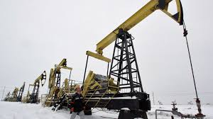
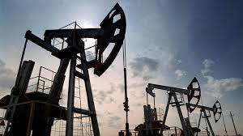
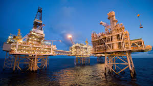
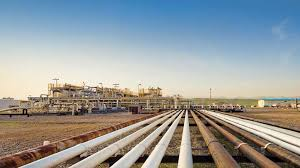
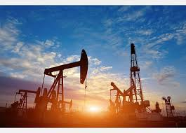
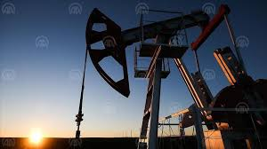

Мировые ресурсы
10 лидирующих стран по добыче нефти
Америка
| Доля рынка: 15.8% |
| Макс. объем добычи (в день): 12,88 млн. в 2019 |
| Мин. объем добычи ( в день): 3,97 млн. в 2008 |
| Объем потребления: - 20,3 млн. в день |
| Объем экспорта - 3,77 млн. баррелей |
| Объем запасов - 50 млрд. баррелей |
Россия

| Доля рынка: 13.5% |
| Макс. объем добычи (в день): 11,05 млн. в 2018 |
| Мин. объем добычи ( в день): 5,7 млн. в 1998 |
| Объем потребления: - 3,23 млн. в день |
| Объем экспорта - 5,22 млн. баррелей |
| Объем запасов - 106,2 млрд. баррелей |
Саудовская Аравия

| Доля рынка: 12.1% |
| Макс. объем добычи (в день): 11,1 млн. в 2018 |
| Мин. объем добычи ( в день): 2,34 млн. в 1985 |
| Объем потребления: - 2,15 млн. в день |
| Объем экспорта - 10,6 млн. баррелей |
| Объем запасов -267 млрд. баррелей |
Канада

| Доля рынка: 5.7% |
| Макс. объем добычи (в день): 4,63 млн. в 2019 |
| Мин. объем добычи ( в день): 0,95 млн. в 1982 |
| Объем потребления: - 2,67 млн. в день |
| Объем экспорта - 3,6 млн. баррелей |
| Объем запасов -169 млрд. баррелей |
Ирак

| Доля рынка: 5.6% |
| Макс. объем добычи (в день): 4,83 млн. в 2016 |
| Мин. объем добычи ( в день): 0 млн. в 1991 |
| Объем потребления: - 0,76 млн. в день |
| Объем экспорта - 3,8 млн. баррелей |
| Объем запасов - 147,2 млрд. баррелей |
Китай
| Доля рынка: 4.8% |
| Макс. объем добычи (в день): 4,4 млн. в 2015 |
| Мин. объем добычи ( в день): 1,01 млн. в 1973 |
| Объем потребления: - 14 млн. в день |
| Объем экспорта - 49 тыс. баррелей |
| Объем запасов - 25,9 млрд. баррелей |
ОАЭ

| Доля рынка: 4.4% |
| Макс. объем добычи (в день): 3,52 млн. в 2020 |
| Мин. объем добычи ( в день): 0,99 млн. в 1984 |
| Объем потребления: - 0,9 млн. в день |
| Объем экспорта - 2,3 млн. баррелей |
| Объем запасов - 97,8 млрд. баррелей |
Бразилия

| Доля рынка: 3.8% |
| Макс. объем добычи (в день): 3,16 млн. в 2020 |
| Мин. объем добычи ( в день): 0,33 млн. в 1995 |
| Объем потребления: - 2,4 млн. в день |
| Объем экспорта - 1,4 млн. баррелей |
| Объем запасов - 13 млрд. баррелей |
Кувейт

| Доля рынка: 3.6% |
| Макс. объем добычи (в день): 3,76 млн. в 1973 |
| Мин. объем добычи ( в день): 0 млн. в 1991 |
| Объем потребления: - 0,46 млн. в день |
| Объем экспорта - 2 млн. баррелей |
| Объем запасов - 101,5 млрд. баррелей |
Иран
| Доля рынка: 2.5% |
| Макс. объем добычи (в день): 6,67 млн. в 1976 |
| Мин. объем добычи ( в день): 0,51 млн. в 1980 |
| Объем потребления: - 1,82 млн. в день |
| Объем экспорта - 1,85 млн. баррелей |
| Объем запасов - 155,6 млрд. баррелей |